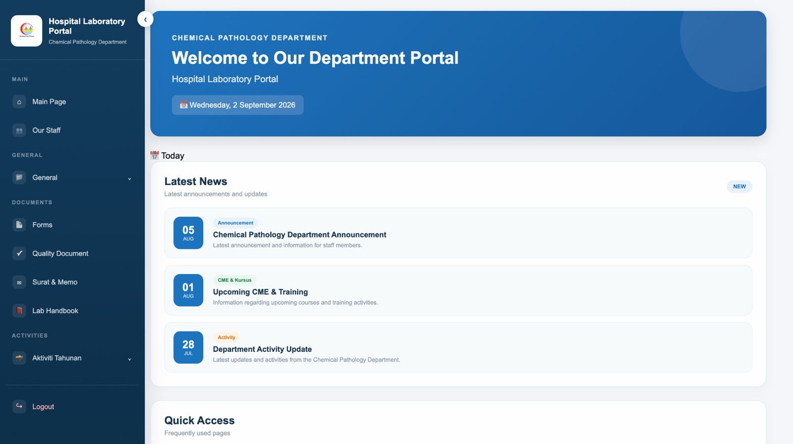
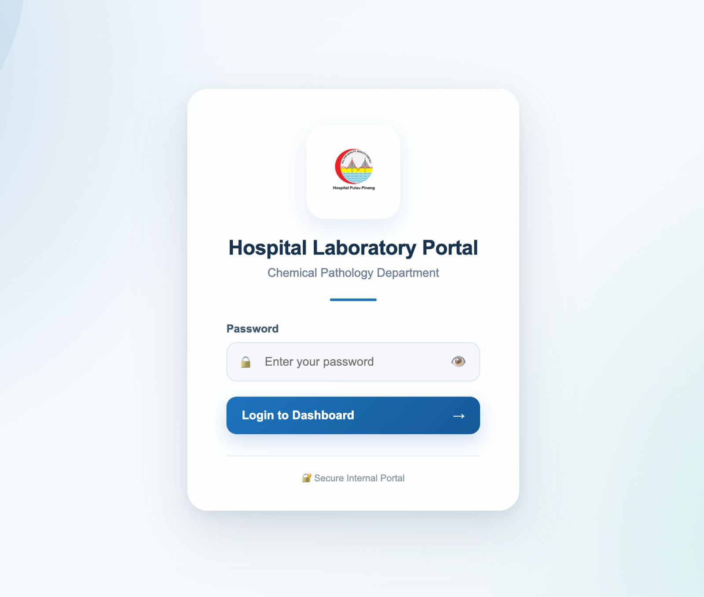

WEB DEVELOPMENT
Hospital Laboratory Portal
A responsive web-based laboratory portal designed to centralize departmental information, documents, announcements, staff information and activities within a single interface.

Main dashboard interface featuring responsive navigation, department announcements, quick access and laboratory resources.

Login interface with password validation and show/hide password functionality.
Project Overview
The Hospital Laboratory Portal was developed as a centralized web interface for accessing departmental resources and information.
The interface focuses on clear navigation, responsive layouts and a simple user experience across desktop, laptop, tablet and mobile devices.
Key Features
- Responsive desktop and mobile interface
- Collapsible sidebar navigation
- Mobile sidebar auto-close navigation
- Login interface with password validation
- Show and hide password functionality
- Department news and announcements
- Laboratory document section
- Staff information section
- Department activities section
- Document search functionality
What I Worked On
I designed and developed the user interface, responsive navigation and interactive elements using HTML, CSS and JavaScript.
I also implemented responsive behaviour so that the sidebar and content adapt to different screen sizes, including automatic sidebar closing on smaller devices.
What I Learned
This project strengthened my understanding of responsive web design, JavaScript interactions, interface structure and maintaining a web project using Git and GitHub.
PROJECT HIGHLIGHTS
Built for usability.
HTML5 · CSS3 · JavaScript
Responsive Design · Local Storage
Git & GitHub
Designed a clean hospital portal interface with structured navigation, responsive layouts, interactive components and user-friendly access.
Focused on intuitive navigation, responsive layouts, accessible content and simple interactions for a smoother user experience.
Backend integration · Database connectivity
Role-based authentication · API integration
Enhanced document management